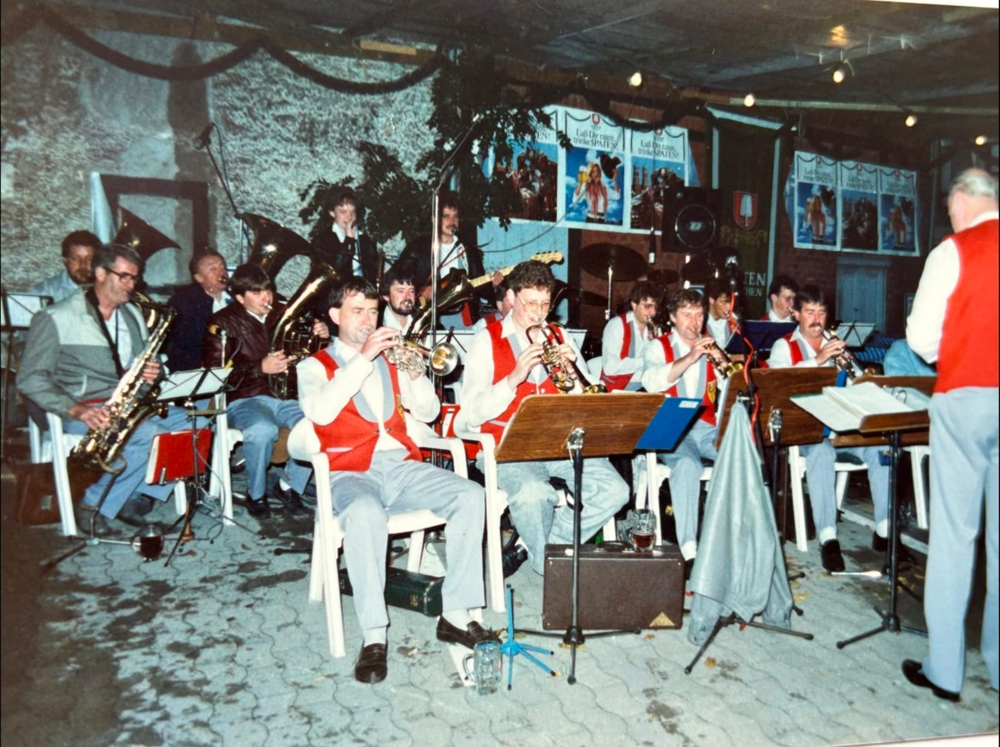
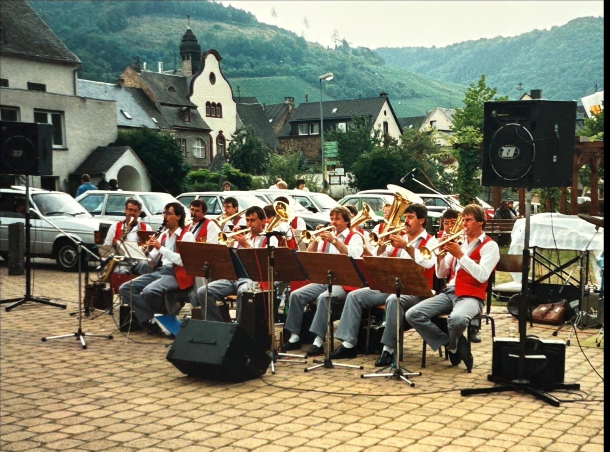

Die Band
Über 20 Musikerinnen und Musiker aus der Eifel, mit Bläsern, Gesang, Keyboard, Gitarren und Schlagzeug: Unterhaltungsmusik von Polka bis Pop und Rock.
Mitte der 70er: die Gründung

Die Fidelen Eifelländer entstanden Mitte der 70er Jahre auf Initiative des damaligen Dirigenten der Musikvereine Darscheid und Uersfeld. Musikerinnen und Musiker aus beiden Vereinen sollten gute Unterhaltungsmusik spielen, die über das übliche Repertoire eines Musikvereins hinausgeht.
Seit damals: von der Kapelle zur Bigband

Zu den Bläsern kamen Gesang, Keyboard, Percussion und Gitarren. Aus dem Ensemble wurde im Laufe der Jahre eine Bigband, die für jedes Alter und jeden Geschmack spielt.
Heute: die Besetzung
![[VEREIN KLÄREN: Bildbeschreibung 3] Die Fidelen Eifelländer](assets/img/old/old3.jpeg)
Meist stehen etwas mehr als 20 Musiker auf der Bühne: Trompete, Saxophon, Tenorhorn, Klarinette, Querflöte, Posaune und Tuba, dazu Keyboard, E-Bass, E-Gitarre, Percussion, Schlagzeug und Gesang. Sie kommen aus dem Umkreis von etwa 30 km um Ulmen und haben vielfach langjährige Erfahrung in der Tanz- und Unterhaltungsmusik.
Für Ihr Fest: das Repertoire
![[VEREIN KLÄREN: Bildbeschreibung 4] Die Fidelen Eifelländer](assets/img/old/fidele_Eifellaender_15_web.jpg)
Von klassischer Blasmusik wie Polka und Walzer bis zu Pop- und Rockhits, deutsch und englisch, Evergreens und Aktuelles. Wir stellen das Programm auf Ihr Fest zusammen:
- Oktoberfest: Bierzeltstimmung mit Polka, Walzer und Mitsingliedern bis zum Schunkeln auf den Bänken.
- Weinfest: Evergreens und Schlager, bei denen man gern sitzen bleibt und trotzdem mitsingt.
- Biergartenfest: entspannte Unterhaltung zu Essen und Gesprächen, am Abend tanzbar.
- Schützenfest: vom Frühschoppen bis zum Tanzabend ein Ensemble für den ganzen Festtag.
[VEREIN KLÄREN: Titelbeispiele und Auftritte, die genannt werden dürfen, ergänzen.]